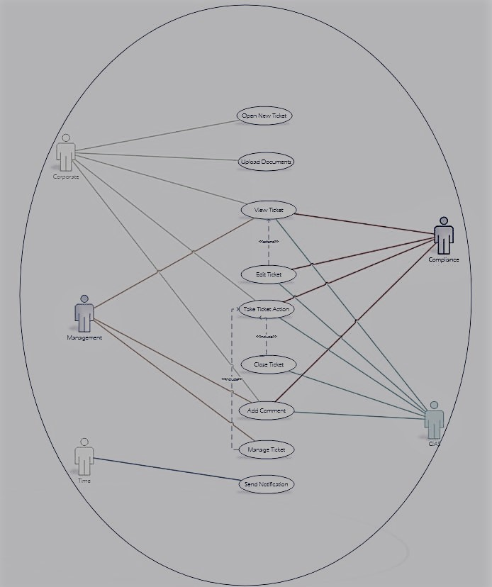
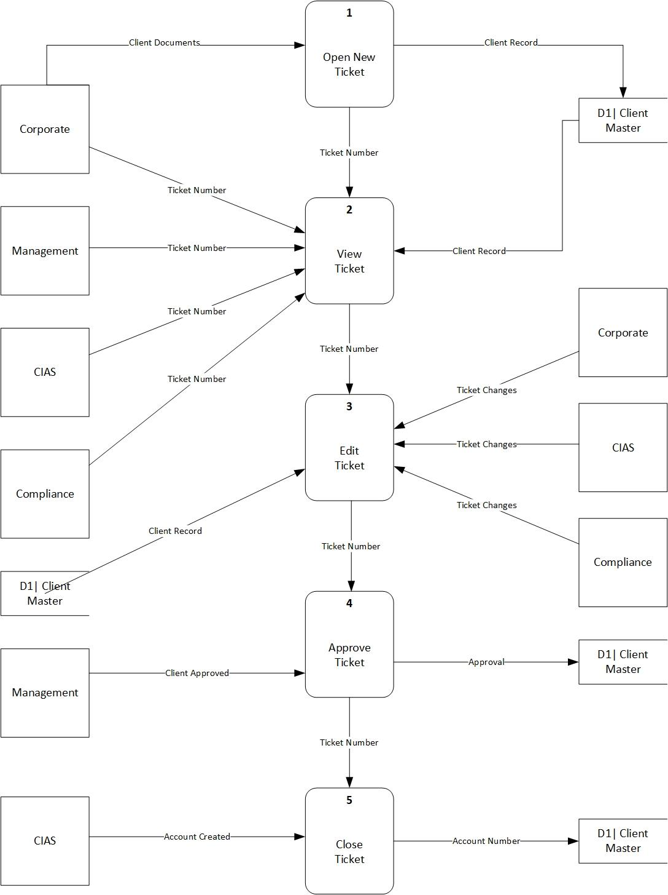
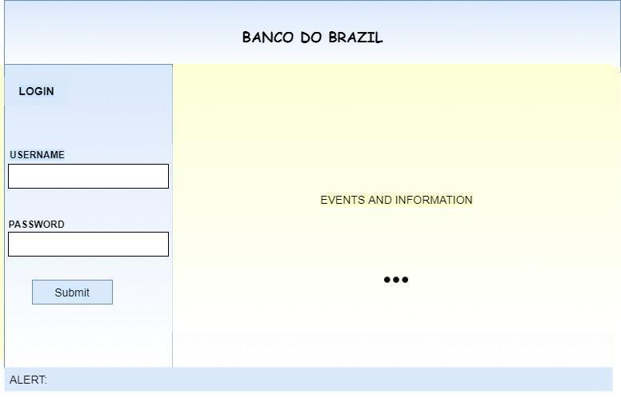
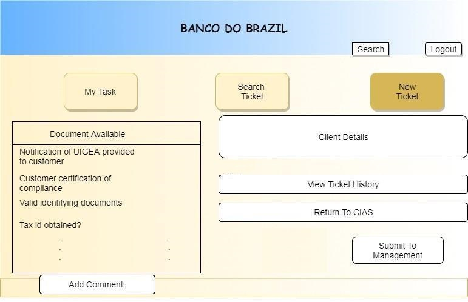
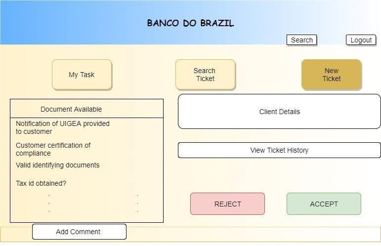
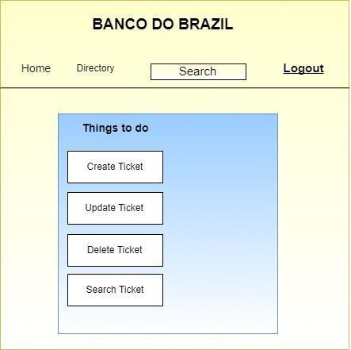
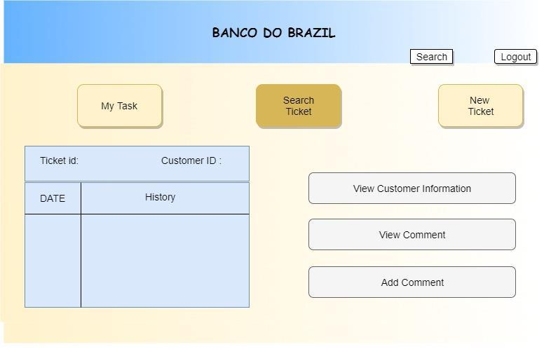
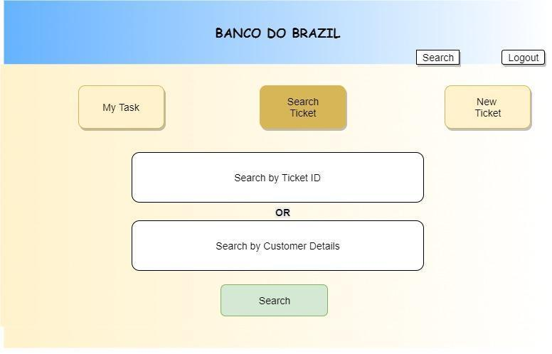

This project had been done before I came across UX field. It will give you brief idea about
how system and user interaction without considering much about
users' feedback.
I am looking forward to take more interviews with users and designing more realistic prototype
for the same.
However, just take look at how systems analysis done and its different approaches. (It is interesting too!!)
The problem with the existing system is the constant back and forth of
e-mails and opening of attachments. Once the client sends the Account Opening Kit and required
documentation, it is constantly e-mailed between the bank’s front and back office for authorization.
It is important to note that clients do not always send the complete
account opening kit or necessary
documentation. Sometimes required fields are left blank, ID’s are missing, signatures are ineligible,
or documents are expired.
This creates extra layers to the process that involve even more
e-mails between departments to request pending or missing information.
Remember, the front and back
office mostly deal with issues pertaining to existing accounts which
constitute a bulk of their daily activities. Account openings are just a small percentage of what the
bank does. E-mails can very easily be lost or forgotten as they pile on top of one another.
This creates an operational risk in which account opening requests and documentation
may be delayed,
neglected, and possibly lost due to a lack of a proper tracking system.
Proposed solution was the development of a workflow system that will transmit
and track the flow of documentation and communication related to the account opening process.
The system
will be web based, accessible only through the bank’s intranet, and used internally by the
departments that process account opening requests. Clients will not have
access to this system.
Each request for a new account will generate a ticket with a unique identifying number. This
ticket will be used to transfer information and documentation back and forth
between the front
and back office. They will be able to designate which of the four departments to send the ticket
to (Corporate, CIAS, Compliance, or Management).
Each department – with the exception of Management
– will have a checklist with requirements that need to be fulfilled before the ticket can move forward.
Whenever
an action is required due to pending, incomplete, or incorrect information, the system
will automatically generate notifications to those responsible so that they can
attend to the issue.
This will ensure that anything related to account opening will be found in one location with
historical data that shows the flow or stoppage of flow in any particular instance
in the process.
Execution dates and times will be maintained to assist with the tracking.
After conducting an interview through a video conference with all of the stakeholders
involved including: Corporate, CIAS, Compliance, and IT. Follow-up phone interviews
were conducted with
Corporate, CIAS, and Management to ask new questions or to clarify questions asked during the video conference.
Below are the systems requirements
that were discussed:
User Case Diagram and Data Flow Diagram
 What follows are some screenshots from our system. Each screen is designed to reflect the needs of the department/user who will use it.
Below is the New Ticket information page that the Corporate office would see.
Note that there are places to upload documents and check off the completed requirements.
You will see this detail in all the pages that require it. The workflow can be submitted to
CIAS when completed.
Below is the New Ticket window CIAS would see. Note that the work can be submitted to Compliance when complete.
Below is the screen management sees when logged into the system. They can either accept or reject an entry into the system.
This page shows the tasks that a user can complete when in the system
This page allows various users to search the ticket history.
This page allows a user to search for a specific ticket.
 This project was the best practice to get to know more about
system before proceeding to the development phase. It could be consider as, more of intermediate
step between
UX research and development.